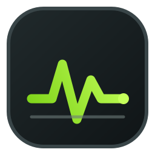

本机硬件状态
正在读取系统状态
只采集需要展示的实时指标，温度传感器按设备能力提供。
检查中
实时指标
随系统负载持续更新
CPU读取中
GPU读取中
短时趋势
最近的内存采样数据

MONITORSYSTEM PULSE本机硬件状态
只采集需要展示的实时指标，温度传感器按设备能力提供。
随系统负载持续更新
最近的内存采样数据
LOCAL HISTORY
把硬件状态保存到本机，按时间回看负载、温度与磁盘活动。记录开关和最长保留周期在右侧独立管理。
正在读取本地记录
开启记录后，系统会按固定间隔保存采样数据。
ABOUT MONITOR TOOL
一款面向 Windows 的轻量硬件状态监控工具，用清晰、紧凑的浮窗持续展示本机关键指标。
实时概览、可自定义浮窗、硬件传感器和本地历史趋势整合在同一应用中。
专注于将日常工作流做成可靠、简洁的桌面工具。
个人主页：https://www.carl.top
查看源代码、更新说明和最新 Windows 安装包。
启动时自动检查，也可随时手动检查
正在读取版本信息…
发现新版后提示，由你选择是否下载安装。检查仅发送版本和平台信息，不上传硬件状态或历史记录。
实时采样、浮窗显示与历史记录均在本地运行；部分温度、功耗和风扇读数会因硬件、驱动或系统权限而不可用，应用会明确显示状态，不会伪造数据。